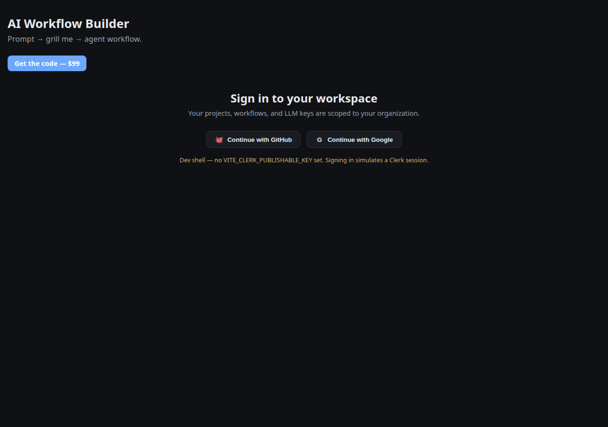

Grill-Me Spec Refinement
Interactive interview engine that resolves architectural ambiguities before a single node is rendered, cutting iteration cycles.
Stop hand-crafting fragile agent glue code. AI Workflow Builder refines your high-level intent via the Grill-Me spec loop, validates node dependencies against cycles and dangling links, and compiles the entire DAG into production-ready Python orchestration code.

From an initial prompt to an interactive architectural interview, a validated acyclic graph, and deployable code.
# Auto-generated by AI Workflow Builder v0.1.0
import asyncio
from typing import Dict, Any
class ResearchOrchestrator:
def __init__(self, vault_keys: Dict[str, str]):
self.keys = vault_keys
async def execute(self, topic: str) -> Dict[str, Any]:
# Step 1: Scrape candidates
papers = await self.arxiv_scraper(topic)
# Step 2: Analyze Breakthroughs
insights = await self.claude_analyzer(papers)
# Step 3: Verify Claims
verified = await self.perplexity_checker(insights)
# Step 4: Dispatch to Slack & Notion
return await self.dispatch_report(verified)A structured, 4-step pipeline that prevents hallucinations and runtime failures before your agents execute.
STEP 01
Type what you want your agents to do in everyday language — no need to pre-format JSON or define schemas upfront.
STEP 02
The builder asks 3–5 targeted questions to clarify edge cases, model assignments, tool requirements, and failure modes.
STEP 03
Review the workflow on an interactive canvas. The pre-flight engine verifies dependencies, cycle freedom, and tool bindings.
STEP 04
Generate clean, self-contained Python orchestration scripts with zero runtime lock-in. Run on your own machines forever.
Built from scratch to solve real-world agent orchestration problems: brittle connections, silent failures, and leaked credentials.
Interactive interview engine that resolves architectural ambiguities before a single node is rendered, cutting iteration cycles.
Powered by React Flow with custom node states, zoom controls, minimap, auto-layout, and interactive dependency linking.
Deterministic graph analysis detects circular references, orphaned sinks, and missing inputs at compile time, not runtime.
Compiles validated graphs into readable, idiomatic async/await Python code with built-in retry policies and type hints.
Stores Anthropic, OpenAI, Groq, and local inference keys securely on your disk. Keys are sealed at rest and never exposed.
No remote databases, no monthly subscriptions, no telemetry leaks. Everything executes inside your local environment.
AI Workflow Builder is part of a complete suite of developer tools and autonomous agent systems designed for high-performance teams.
Turn plain-language prompts into validated, dependency-checked multi-agent AI workflows. Visual DAG designer, Grill-Me loop, and clean Python code generation.
Distributed autonomous agent collaboration system with shared task boards, evidence collection, background workers, and multi-model dispatching.
Comprehensive roster of specialized AI personas: Software Architects, Security Auditors, DevOps Automators, SREs, QA Engineers, and Growth Strategists.
Production Docker compose stacks and hardware-tuned inference scripts for hosting open-weights LLMs (Llama 3, DeepSeek, Qwen) on private clusters.
End-to-end automated media creation pipeline: voice synthesis, lip-synced avatar generation, dynamic caption overlay, and multi-platform publishing.
Free suite of developer utilities, token cost calculators, JSON formatting tools, media compressors, and financial modelers at slashmantools.us.
Subscribe with one click via Google to receive new workflow DAG templates, agent prompt patterns, and exclusive release discounts directly to your inbox.
One-click verified sign-up · No spam guarantee
🔒 Privacy First: We respect your inbox. No spam, ever. One-click unsubscribe anytime.
The entire platform runs directly on your hardware. Node.js 22.5+ and npm are all you need.
:4000 and visual studio on :5173.http://localhost:5173 and start building workflows.# 1. Clone repository or unpack zip
$ git clone git@github.com:slashman413/ai-workflow-builder.git
$ cd ai-workflow-builder
# 2. Install monorepo dependencies (server + web)
$ npm install
# 3. Launch server (:4000) and web UI (:5173)
$ npm run dev
# 4. Open the studio canvas
$ open http://localhost:5173Need production clustering or Docker deployment? See the Deployment Guide in the repo.
One prompt in → a validated, dependency-checked multi-agent workflow out. Own your code, run it anywhere, forever.